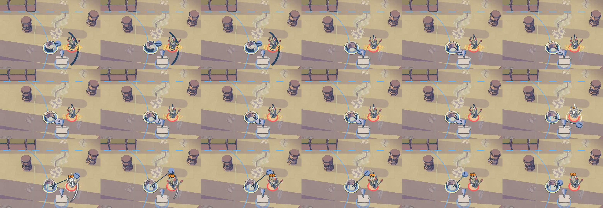
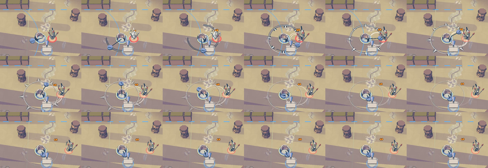
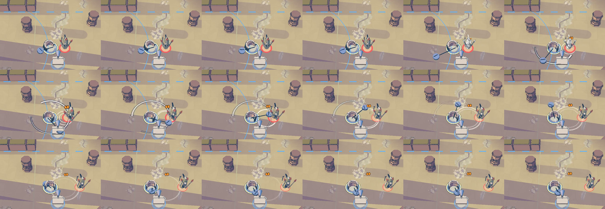

Lasso: Around the world gets its own orbit ring
To review · 2026-10-31 · thr_6gjcvf6veq
Around the world now closes a full ring at its true reach, with short spikes flung outward, while Tangle keeps its open snare arc. Land it, or try another shape?


